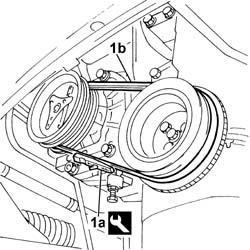

1092D14 air conditioner compressor drive belt - adjust tension
- Path
- Procedures > 10 ENGINE > 1092 ENGINE COMPONENT MISCELLANEOUS DRIVES > 1092D air conditioner compressor drive > 1092D14 air conditioner compressor drive belt - adjust tension
- Kind
- repair procedure (removal / refitting; the operation number is the code)
- Applies to
- all engines; all production periods
- Interactive page
- https://sloeber94.github.io/elrnDB-fDbl/en/#/2584332
Applies to: all engines; all production periods
Position the vehicle on a lift.
7055B54 under-engine guard - r r
1. Use tool (1a) and check that the tension of new belt (1a) is within the recommended values.
 | Name | Country |
|---|---|---|
1a | Torque wrench | 1.895.762.000 |
 | Measurement | Value | |
|---|---|---|---|
- | Tension (daN) | 48 - 60 | |
New belt (-) | - | ||
| Measurement | Value | |
|---|---|---|---|
- | Tension (-) | 30 - 41 | |
Used belt (-) | - | ||

Applies to: all engines; all production periods
If the value measured is not within the recommended limits, carry out the tensioning operation, loosening the compressor fastenings.
Act on the micrometric screw and correct the belt tension until it is within the permissible limits.
When the operation is completed, tighten the compressor fixing nuts and bolts to torque.
 | Fastening | Component | Ø | Value (daNm) |
|---|---|---|---|---|
- | Nut | AIR CONDITIONER ASSEMBLY COMPRESSOR | M10 x 1.25 | (Front fastening) 5 |
| Fastening | Component | Ø | Value (daNm) |
|---|---|---|---|---|
- | Bolt | AIR CONDITIONER ASSEMBLY COMPRESSOR | M10 x 1.25 | (Front fastening) 5 |
| Fastening | Component | Ø | Value (daNm) |
|---|---|---|---|---|
- | Bolt | AIR CONDITIONER ASSEMBLY COMPRESSOR | M8 x 1.25 | (Rear fastening) 2.2 |
7055B54 under-engine guard - r r
Remove the car from the lift.